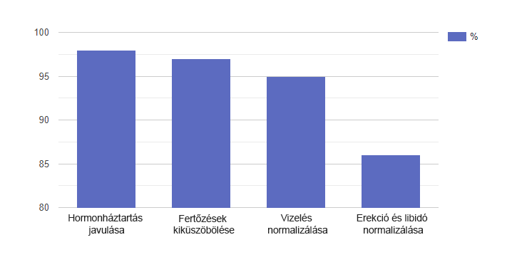

Műsorvezető: Irma, Dániel, üdvözlöm a stúdióban! Irma, néhány hónappal ezelőtt segítséget kért tőlünk. Mondja el, mi az oka.
Irma: Igen, én voltam a kezdeményező. Számomra úgy tűnt, hogy a házasságunk a végéhez közeledett, mivel a férjem beteg. Rábeszéltem, hogy kérjen segítséget. Az ön műsora az utolsó reményünk. Dániel nem mondott nekem semmit, és nem akart szakemberhez fordulni.
Műsorvezető: Irma, kérlek, mondd el, miért döntöttél úgy, hogy Dániel beteg?
Irma: Körülbelül hat hónapja nem volt szexuális kapcsolatunk. Már szexi fehérneműt is vettem és romantikus vacsorákat főztem neki. Semmi sem működött! Úgy tűnt, hogy egyáltalán nem úgy tekint rám, mint egy nőre. Természetesen először arra gondoltam, hogy bennem van az ok. Sírtam, aggódtam ... Folyamatosan veszekedtünk ezen az alapon.
Műsorvezető: Talán szeretője van. Gondolt már erre az események alakulása során?
Irma: Persze, hogy gondoltam. De szabadúszóként dolgozik, és idejének nagy részét otthon tölti. Egyszerűen nincs ideje találkozni a nőkkel. De kiderült, hogy volt ideje a pornófilmekre.
Műsorvezető: Húha, ez már érdekes?!
Irma: Igen, egyszer rajtakaptam hogy nézi a filmet a fürdőszobában. Elfelejtette becsukni az ajtót. Nagyon feldühített: velem nem hajlandó szexelni, de maszturbál ismeretlen meztelen nőkre tud. Veszekedni kezdtünk, és Dániel annyira mérges lett, hogy egy üveg sampont dobott felém, ami a fejemhez ért. Még a mentő is kijött hozzám, mert a homlokom vérezett. Ijesztő volt, hogy agyrázkódásom is lehetett. De semmi sem történt. Tudtam, hogy valami történik Dániellel, de nem tudtam, mi az.
Műsorvezető: Van egy kérdésem Dánielhez: mi történt valójában? Miért nem mondtad el a feleségednek, miben rejlik a probléma?
Dániel: Először is azt akarom mondani, hogy szégyellem a viselkedésemet. És bocsánatot akarok kérni Irmától az egész ország előtt. Talán igazán el kellett volna mondanom neki, hogy mi történt velem. De magam is meg voltam ijedve.Az erekció során éles fájdalmat éreztem a péniszemben. Aztán a vizelési inger egyre gyakoribbá vált, éjszaka is Rosszul kezdtem aludni, étvágyam romlott és depressziós érzés kísért. Amikor mindehhez hozzáadódtak az erekciós problémák, egyáltalán nem akartam szexelni. Bezárkóztam magamban, és féltem beismerni Irmának, hogy problémáim vannak. Féltem, hogy alacsonyabbrendű férfivá válok, és a feleségem elhagy. Azt is reméltem, hogy minden önmagában valahogy elmúlik.
Hogy gondolja, Dániel, milyen problémával szembesült?
Dániel: Nehéz megmondanom, esetleg valami a prosztatával történt.
Műsorvezető: Valójában van némi igazság a válaszában. Tudjuk ezt, mert mielőtt eljött a stúdióba, a szakemberünk tesztelte és megvizsgálta Önt. Készen áll arra hogy megtudja a patológiáját?
Dániel: Igen.
Műsorvezető: Ön prosztatagyulladásban szenved.
Dániel: Istenem!
Műsorvezető: Igen, ijesztően hangzik. Derítsük ki, hogy valóban igaz-e ez, megtudjuk a szakembertől, aki megvizsgálta Önt. Ma Ő a vendégünk. Delcsev Péter, Öné a szó.
Delcsev Péter: Valójában Dániel
prosztatagyulladása a kezdeti stádiumból egy
akut állapotba került. Ez pedig nem hat hónap
alatt történt meg.
Az a helyzet, hogy a
kezdeti szakaszban a prosztatagyulladás leggyakrabban
tünetmentes. Néha a férfi
kényelmetlenséget érezhet a herezacskó
és az ágyék területén, tompa
fájdalmat ézerhet a has alsó
részén. De leggyakrabban egyszerűen nem
tulajdonít ennek jelentőséget: Nos, ki
fordul szakemberhez, csak azért, mert párszor
szúró fájdalmat érzett az
ágyékán? Végül is ez mind a
fáradtságnak, mind a kényelmetlen
fehérneműnek tulajdonítható ...
Egy másik jel -a gyakoribb WC látogatás. Emiatt a férfiak éjszaka gyakran ébreneznek. Igaz, sokan erre sem reagálnak. De ez csak tovább romlik: a folyamat nehezebbé válik,égő érzés, fájdalom kíséri , mert a férfinek a prosztata mérete megnő és összehúzza a húgycsövet. Ugyanakkor jelentős a valószínűsége annak, hogy a gyulladás más szervekre is átterjed:
Természetesen vannak problémák a szexuális életben is. A partner iránti intim vágy ritkábban merül fel, az erekció elmarad, az orgazmus minősége elenyésző - mindezt a fáradtságnak és stressznek tulajdonítják.
Minél tovább haladunk, annál rosszabbá válik. Amikor a prosztatagyulladás tünetei egyre világosabbá válnak, ez csak egyet jelenthet - a gyulladásos folyamat megerősödött és aktív formává vált. Ha továbbra is habozik a terápiával, minden véget érhet prosztatarákkal!
Veszélyben lehet!
Tegyen egy rövid tesztet az
egészségének ellenőrzésére
Válaszoljon 5 kérdésre, és nézze meg, van-e oka aggodalomra
Fájdalmat és égést érez vizelés közben?
Éjjel többször mint egy alkalommal jár WC-re?
Szorongónak és depressziósnak érzi magát?
Észrevette a potencia csökkenését?
Hány éves?

Eredmény:
Köszönöm a válaszokat! Sajnos csak néhány lépés választ el a halálos következményektől. Annak érdekében, hogy ne álljon le a férfi a szó szoros értelmében, kezdje el most a terápiát!
Kezdj el cselekedniKöszönöm! Befejezte a tesztet.
Műsorvezető: Van-e Dánielnek esélye elkerülni a végbélmasszázst, kúpokat és beöntéseket?
Delcsev Péter: Sajnos a készítmények többsége amelyeket értékesítenek, jobb esetben csak egy ideig segíthetnek. Miután a gyulladás ismét súlyosbodni fog, visszatérnek a fájdalmak és egyéb kellemetlen tünetek.
De jó hír, hogy Dániel hetek óta új készítményt, szedett, ezt a terméket sok szakértő dicséri. Ez a termék pozitívan befolyásolja az egész hugyuti rendszer munkáját.Különösen segít a hormonok javításában, a fertőzések és gyulladások megszüntetésében, a vér tisztításában, a libidó fokozásában és az erekció erősítésében.Ezenkívül az általában nem okoz függőséget és pozitív hatással van a szervezetre, mivel nagyrészben természetes összetevőket tartalmaz.
Ennek a terápiának köszönhetően Dániel közérzete jelentősen javult, és most sokkal jobban érzi magát.
Műsorvezető: Dániel, ez tényleg így van?
Dániel: Ez igaz. Néhány napos kapszula szedése után a péniszben fellépő fájdalmaim eltűntek. Aztán ritkábban kezdtem el WC-re járni, és éjjel sem ébredek fel. Most alszom, mint egy csecsemő, és a hangulatom javult, bár hittem benne, hogy valami segíthet rajtam.
Delcsev Péter: A termék összetevői
gondosan kiegyensúlyozottak, összetett módon
hatnak a probléma okára, ezáltal növelve
a terápia hatékonyságát.
Íme
néhány összetevő:
- fenyő kivonat - gyulladáscsökkentő és fertőtlenítő tulajdonságokkal rendelkezik. A vesék és a húgyutak kezelésére használják, vesekövek esetén;
- vörösáfonya kivonat - segít a hugyuti rendszer fertőzései ellen. A hatás a proantocianidinnek köszönhető, amely segít megakadályozni a baktériumok bejutását a húgyutakba;
- kamilla kivonat - az összetevő segít megtisztítani a vért és oxigénnel és vitaminokkal segíti erősíteni a hugyuti rendszert; csalán levél kivonat - jótékony hatással van a fő férfi hormon tesztoszteron szintézisének stimulására. Ez viszont jótékony hatással van a férfi teljes hugyuti rendszerére - a potenciától a prosztata egészségéig.
Műsorvezető: A stúdióban Róbert Komsev is jelen van, aki az forgalmazza. Jó napot, Róbert úr! Tudom, hogy érdekes számai vannak, amelyeket készen áll megosztani velünk.
Róbert Komsev: Jó napot! Valóban az terjesztem. Nemrégiben több mint 300 használó között saját felmérését végeztük. Legtöbbjük nagyszerű eredményeket ért el. A felmérés azt mutatta, hogy az működik, de a hasonló termékekkel ellentétben tartósabb hatása van, amely általában a kúra befejezése után is tart.

Itt vannak a fő eredmények, amelyeket elvárhat a terméktől:
- A hormonális háttér javulása: tesztoszteroné és aldoszteroné - a prosztata egészségéért felelős hormonok.
- A hugyuti gyulladások megszüntetése: a patogén baktériumoknak nincs esélyük a túlélésre.
- Fájdalmak és más kellemetlen tünetek megszűnése.
- Vizelés normalizálása.
- Az erekció normalizálása és a libidó növekedése: a nemi aktus hosszabb lehet, a libidó erősebb lesz.
További felmérési eredmények számokban:

Kevés más termék büszkélkedhet ugyanazzal a teljesítménnyel.
Ezenkívül jó híreim vannak. Most 50% kedvezmény jár az árából. Ilyen döntést hoztunk, mivel hogy teljesen átakarunk térni az online értékesítésre. A gyógyszertárakban a hamis termékek gyakoribbá váltak, és ezt a pillanatot semmilyen módon nem tudtuk ellenőrizni. Az akció (beleértve) tart. És nem valószínű, hogy ez valaha is megismétlődik.
- Töltse ki a rendelési űrlapot (beleértve).
- Válaszoljon a menedzser hívására és erősítse meg a megrendelést.
- Vegye át a csomagot megrendeléstől számított 3-6 napon belül a legközelebbi postán.
Műsorvezető: Kedves szakértők és a stúdió vendégei! Számomra a fő eredmény az, hogy hallom, hogy Dániel jobban érzi magát, és látom a mosolyát felesége, Irma arcán. Nagyon örülök, hogy tudtunk segíteni Önnek. Örülök annak is, hogy felhoztuk a prosztatagyulladás témáját . - a téma amelyről minden férfinek beszélni kell. Remélhetőleg a programunk után kevésbé fognak félni. Végül is most megszabadulhat a prosztatagyulladástól megalázó eljárások nélkül, például az kapszulák segítségével. Ez minden. Búcsúzom Önöktől és hamarosan találkozunk az éterben!
FIGYELEM: Most az ra akció van. A férfi egészséget segítő kapszulákat kaphatja meg. Ehhez ki kell töltenie egy űrlapot. A promóciós termékek száma korlátozott.
Vélemények: